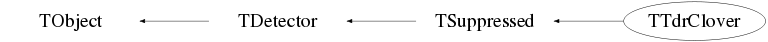

class TTdrClover: public TSuppressed
TTdrClover The TTdrClover class defines the observables and algorithms used when analyzing GRIFFIN data. It includes detector positions, add-back methods, etc.
Function Members (Methods)
public:
| virtual | ~TTdrClover() |
| void | TObject::AbstractMethod(const char* method) const |
| virtual bool | TSuppressed::AddbackCriterion(const TDetectorHit*, const TDetectorHit*) |
| virtual void | AddFragment(const shared_ptr<const TFragment>&, TChannel*) |
| virtual void | TObject::AppendPad(Option_t* option = "") |
| virtual void | TObject::Browse(TBrowser* b) |
| virtual void | TDetector::BuildHits() |
| ULong_t | TObject::CheckedHash() |
| static TClass* | Class() |
| virtual const char* | TObject::ClassName() const |
| virtual void | Clear(Option_t* opt = "all") |
| virtual void | TDetector::ClearTransients() |
| virtual TObject* | TObject::Clone(const char* newname = "") const |
| virtual Int_t | TObject::Compare(const TObject* obj) const |
| virtual void | Copy(TObject&) const |
| virtual void | TObject::Delete(Option_t* option = "")MENU |
| virtual Int_t | TObject::DistancetoPrimitive(Int_t px, Int_t py) |
| virtual void | TObject::Draw(Option_t* option = "") |
| virtual void | TObject::DrawClass() constMENU |
| virtual TObject* | TObject::DrawClone(Option_t* option = "") constMENU |
| virtual void | TObject::Dump() constMENU |
| virtual void | TObject::Error(const char* method, const char* msgfmt) const |
| virtual void | TObject::Execute(const char* method, const char* params, Int_t* error = 0) |
| virtual void | TObject::Execute(TMethod* method, TObjArray* params, Int_t* error = 0) |
| virtual void | TObject::ExecuteEvent(Int_t event, Int_t px, Int_t py) |
| virtual void | TObject::Fatal(const char* method, const char* msgfmt) const |
| virtual TObject* | TObject::FindObject(const char* name) const |
| virtual TObject* | TObject::FindObject(const TObject* obj) const |
| TDetectorHit* | GetAddbackHit(const int& i) |
| Int_t | GetAddbackMultiplicity() |
| static const char* | GetColorFromNumber(Int_t number) |
| virtual Option_t* | TObject::GetDrawOption() const |
| static Long_t | TObject::GetDtorOnly() |
| virtual TDetectorHit* | TDetector::GetHit(const int&) const |
| virtual const vector<TDetectorHit*>& | TDetector::GetHitVector() const |
| virtual const char* | TObject::GetIconName() const |
| virtual Short_t | TDetector::GetMultiplicity() const |
| UShort_t | GetNAddbackFrags(const size_t& idx) |
| virtual const char* | TObject::GetName() const |
| UShort_t | GetNSuppressedAddbackFrags(const size_t& idx) |
| virtual char* | TObject::GetObjectInfo(Int_t px, Int_t py) const |
| static Bool_t | TObject::GetObjectStat() |
| virtual Option_t* | TObject::GetOption() const |
| static TVector3 | GetPosition(int DetNbr, int CryNbr = 5, double dist = 110.) |
| TDetectorHit* | GetSuppressedAddbackHit(const int& i) |
| Int_t | GetSuppressedAddbackMultiplicity(TBgo*) |
| TDetectorHit* | GetSuppressedHit(const int& i) |
| Int_t | GetSuppressedMultiplicity(TBgo*) |
| TTdrCloverHit* | GetTdrCloverHit(const Int_t& i) const |
| virtual const char* | TObject::GetTitle() const |
| virtual UInt_t | TObject::GetUniqueID() const |
| virtual Bool_t | TObject::HandleTimer(TTimer* timer) |
| virtual ULong_t | TObject::Hash() const |
| Bool_t | TObject::HasInconsistentHash() const |
| virtual void | TObject::Info(const char* method, const char* msgfmt) const |
| virtual Bool_t | TObject::InheritsFrom(const char* classname) const |
| virtual Bool_t | TObject::InheritsFrom(const TClass* cl) const |
| virtual void | TObject::Inspect() constMENU |
| void | TObject::InvertBit(UInt_t f) |
| virtual TClass* | IsA() const |
| bool | IsAddbackSet() const |
| virtual Bool_t | TObject::IsEqual(const TObject* obj) const |
| virtual Bool_t | TObject::IsFolder() const |
| Bool_t | TObject::IsOnHeap() const |
| virtual Bool_t | TObject::IsSortable() const |
| bool | IsSuppressedAddbackSet() const |
| bool | IsSuppressedSet() const |
| Bool_t | TObject::IsZombie() const |
| virtual void | TObject::ls(Option_t* option = "") const |
| void | TObject::MayNotUse(const char* method) const |
| virtual Bool_t | TObject::Notify() |
| void | TObject::Obsolete(const char* method, const char* asOfVers, const char* removedFromVers) const |
| void | TObject::operator delete(void* ptr) |
| void | TObject::operator delete(void* ptr, void* vp) |
| void | TObject::operator delete[](void* ptr) |
| void | TObject::operator delete[](void* ptr, void* vp) |
| void* | TObject::operator new(size_t sz) |
| void* | TObject::operator new(size_t sz, void* vp) |
| void* | TObject::operator new[](size_t sz) |
| void* | TObject::operator new[](size_t sz, void* vp) |
| TTdrClover& | operator=(const TTdrClover&) |
| virtual void | TObject::Paint(Option_t* option = "") |
| virtual void | TObject::Pop() |
| virtual void | Print(Option_t* opt = "") const |
| virtual Int_t | TObject::Read(const char* name) |
| virtual void | TObject::RecursiveRemove(TObject* obj) |
| void | ResetAddback() |
| void | TObject::ResetBit(UInt_t f) |
| void | ResetFlags() const |
| void | ResetSuppressed() |
| void | ResetSuppressedAddback() |
| virtual void | TObject::SaveAs(const char* filename = "", Option_t* option = "") constMENU |
| virtual void | TObject::SavePrimitive(ostream& out, Option_t* option = "") |
| void | TObject::SetBit(UInt_t f) |
| void | TObject::SetBit(UInt_t f, Bool_t set) |
| static bool | SetCoreWave() |
| virtual void | TObject::SetDrawOption(Option_t* option = "")MENU |
| static void | TObject::SetDtorOnly(void* obj) |
| static void | TObject::SetObjectStat(Bool_t stat) |
| virtual void | TObject::SetUniqueID(UInt_t uid) |
| virtual void | ShowMembers(TMemberInspector& insp) const |
| virtual void | Streamer(TBuffer&) |
| void | StreamerNVirtual(TBuffer& ClassDef_StreamerNVirtual_b) |
| virtual bool | TSuppressed::SuppressionCriterion(const TDetectorHit*, const TDetectorHit*) |
| virtual void | TObject::SysError(const char* method, const char* msgfmt) const |
| Bool_t | TObject::TestBit(UInt_t f) const |
| Int_t | TObject::TestBits(UInt_t f) const |
| TTdrClover() | |
| TTdrClover(const TTdrClover&) | |
| virtual void | TObject::UseCurrentStyle() |
| virtual void | TObject::Warning(const char* method, const char* msgfmt) const |
| virtual Int_t | TObject::Write(const char* name = 0, Int_t option = 0, Int_t bufsize = 0) |
| virtual Int_t | TObject::Write(const char* name = 0, Int_t option = 0, Int_t bufsize = 0) const |
protected:
| virtual void | TObject::DoError(int level, const char* location, const char* fmt, va_list va) const |
| void | TObject::MakeZombie() |
private:
| virtual Bool_t | CheckTObjectHashConsistency() const |
| void | ClearStatus() const |
| vector<UShort_t>& | GetAddbackFragVector() |
| vector<TDetectorHit*>& | GetAddbackVector() |
| vector<UShort_t>& | GetSuppressedAddbackFragVector() |
| vector<TDetectorHit*>& | GetSuppressedAddbackVector() |
| vector<TDetectorHit*>& | GetSuppressedVector() |
| void | SetAddback(bool flag = true) const |
| void | SetBitNumber(TTdrClover::ETdrCloverBits bit, Bool_t set) const |
| void | SetSuppressed(bool flag = true) const |
| void | SetSuppressedAddback(bool flag = true) const |
| Bool_t | TestBitNumber(TTdrClover::ETdrCloverBits bit) const |
Data Members
public:
| static TObject::(anonymous) | TObject::kBitMask | |
| static TObject::EStatusBits | TObject::kCanDelete | |
| static TObject::EStatusBits | TObject::kCannotPick | |
| static TObject::EStatusBits | TObject::kHasUUID | |
| static TObject::(anonymous) | TObject::kInconsistent | |
| static TObject::EStatusBits | TObject::kInvalidObject | |
| static TObject::(anonymous) | TObject::kIsOnHeap | |
| static TObject::EStatusBits | TObject::kIsReferenced | |
| static TObject::EStatusBits | TObject::kMustCleanup | |
| static TObject::EStatusBits | TObject::kNoContextMenu | |
| static TObject::(anonymous) | TObject::kNotDeleted | |
| static TObject::EDeprecatedStatusBits | TObject::kObjInCanvas | |
| static TObject::(anonymous) | TObject::kOverwrite | |
| static TObject::(anonymous) | TObject::kSingleKey | |
| static TObject::(anonymous) | TObject::kWriteDelete | |
| static TObject::(anonymous) | TObject::kZombie |
protected:
| vector<TDetectorHit*> | TDetector::fHits |
private:
| vector<UShort_t> | fAddbackFrags | ! Number of crystals involved in creating in the addback hit |
| vector<TDetectorHit*> | fAddbackHits | ! Used to create addback hits on the fly |
| long | fCycleStart | ! The start of the cycle |
| static map<int,TSpline*> | fEnergyResiduals | ! |
| static bool | fSetCoreWave | ! Flag for Waveforms ON/OFF |
| vector<UShort_t> | fSuppressedAddbackFrags | ! Number of crystals involved in creating in the suppressed addback hit |
| vector<TDetectorHit*> | fSuppressedAddbackHits | ! Used to create suppressed addback hits on the fly |
| vector<TDetectorHit*> | fSuppressedHits | ! Used to create suppressed hits on the fly |
| TTransientBits<UChar_t> | fTdrCloverBits | Transient member flags |
| static TVector3 | gCloverPosition[17] | ! Position of each HPGe Clover |
Class Charts



Function documentation
TTdrClover& operator=(const TTdrClover& )
std::vector<TDetectorHit*>& GetAddbackVector()
std::vector<UShort_t>& GetAddbackFragVector()
bool IsAddbackSet() const
void SetAddback(bool flag = true) const
std::vector<TDetectorHit*>& GetSuppressedVector()
bool IsSuppressedSet() const
void SetSuppressed(bool flag = true) const
std::vector<TDetectorHit*>& GetSuppressedAddbackVector()
std::vector<UShort_t>& GetSuppressedAddbackFragVector()
bool IsSuppressedAddbackSet() const
void SetSuppressedAddback(bool flag = true) const
Int_t GetAddbackMultiplicity()
Automatically builds the addback hits using the fAddbackCriterion (if the size of the fAddbackHits vector is zero) and returns the number of addback hits.
TDetectorHit* GetAddbackHit(const int& i)
Int_t GetSuppressedMultiplicity(TBgo* )
Automatically builds the suppressed hits using the fSuppressedCriterion (if the size of the fSuppressedHits vector is zero) and return the number of suppressed hits.
TDetectorHit* GetSuppressedHit(const int& i)
Int_t GetSuppressedAddbackMultiplicity(TBgo* )
Automatically builds the suppressed addback hits using the fAddbackCriterion and fSuppressionriterion (if the size of the fSuppressedAddbackHits vector is zero) and returns the number of suppressed addback hits.
TDetectorHit* GetSuppressedAddbackHit(const int& i)
void AddFragment(const shared_ptr<const TFragment>& , TChannel* )
Builds the TdrClover Hits directly from the TFragment. Basically, loops through the hits for an event and sets observables.
TVector3 GetPosition(int DetNbr, int CryNbr = 5, double dist = 110.)
Gets the position vector for a crystal specified by CryNbr within Clover DetNbr at a distance of dist mm away. This is calculated to the most likely interaction point within the crystal.
void ResetFlags() const
void ResetAddback()
UShort_t GetNAddbackFrags(const size_t& idx)
Get the number of addback "fragments" contributing to the total addback hit
with index idx.
void ResetSuppressed()
void ResetSuppressedAddback()
UShort_t GetNSuppressedAddbackFrags(const size_t& idx)
Get the number of addback "fragments" contributing to the total addback hit
with index idx.
void SetBitNumber(TTdrClover::ETdrCloverBits bit, Bool_t set) const
Used to set the flags that are stored in TTdrClover.
const char* GetColorFromNumber(Int_t number)
TTdrCloverHit* GetTdrCloverHit(const Int_t& i) const
{ return static_cast<TTdrCloverHit*>(GetHit(i)); }